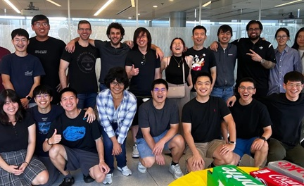
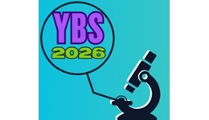
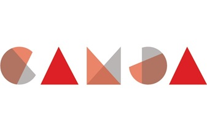

Ph.D. in Biostatistics
Doctoral research advised by Dr. Somnath Datta.
Dissertation: Contributions to Biostatistics and Data Science: scRNA-seq Cluster Validation, AMR Prediction, Oral Health Data, and Sentiment Analysis.
Postdoctoral Associate | Department of Biostatistics, UF, USA
postdoctoral Associate for the UF Department of Biostatistics developing statistical and machine-learning methods for longitudinal, clustered, and complex biomedical data.
A portrait of Owen Visser
I'm a Postdoctoral Associate in the Department of Biostatistics at the University of Florida, where I develop statistical methods and machine-learning approaches for complex biomedical data. I also work part-time with ISCB's Lead Technologist on web development and descriptive statistical analysis.
I've always tried to figure out how things work fundamentally. Once I know how something works, I usually try to create solutions to solve tedious parts of whatever it is I was working with, which is what originally drew me toward programming. Whenever I approached a program I always found myself asking "Why doesn't it do this?" (I still find myself asking that quite often). Over time, that curiosity grew into developing statistical methodology and writing statistical software. Being involved in my community is also important to me. I've always enjoyed opportunities to mentor others and contribute where I can.
A lot of my curiosity and community involvment actually started with online games. Growing up I enjoyed creating third-party add-ons to make repetitive tasks more efficient and would be overjoyed when my friends would compliment and use the tools I created. Playing with friends and solving puzzles is why I'm enjoy by the deep thinking and community effort of teams I work with today. Looking back, I think those experiences played a big role in shaping both my technical interests and how I work with others.
Degrees and training.
Doctoral research advised by Dr. Somnath Datta.
Dissertation: Contributions to Biostatistics and Data Science: scRNA-seq Cluster Validation, AMR Prediction, Oral Health Data, and Sentiment Analysis.
Master’s research advised by Dr. Ping Sa.
Thesis: Upper-Sided EWMA-Based Distribution-Specific Tolerance Limits.
Undergraduate degree in mathematics with a minor in physics.
Research, teaching, mentoring, and professional work.
International Society for Computational Biology (ISCB)
Developing statistical visualizations, tables, and JavaScript reporting interfaces integrated with a Slim 4 (PHP) web application.
Department of Biostatistics, University of Florida · Supervisor: Dr. Arkaprava Roy
Developing graph convolutional neural networks and generative models for irregular longitudinal data, with GPU-accelerated Python implementations and model comparisons.
Department of Biostatistics, University of Florida
Developed estimating-equation methods for clustered outcomes, single-cell clustering validation, antimicrobial resistance prediction workflows, and computational analyses of oral-health data.
Department of Biostatistics, University of Florida
Mentored an M.S. capstone student in statistical analysis, programming, consulting, and technical communication.
Department of Biostatistics, University of Florida
Developed instructional examples and supplemental notes for graduate biostatistics coursework.
Department of Mathematics & Statistics, University of North Florida
Taught College Algebra, College Algebra with Recitation, and Introductory Statistics in in-person and online formats.
Methodological work in progress.
O. Visser and A. Roy
Developing modular graph convolution methods for irregularly observed longitudinal data and studying their theoretical connections to conventional graph convolution.
O. Visser and A. Roy
Investigating generative modeling for irregular longitudinal observations.
O. Visser, S. Levy, B. Dye, S. Zhang, V. Agboli, and S. Datta
Developing weighted GEE methodology and accompanying R software for paired clustered outcomes.
V. Agboli, O. Visser, S. Levy, B. Dye, S. Zhang, and S. Datta
Follow-up research on Pseudo Regression applications.
Peer-reviewed articles and preprints.
O. Visser, S. Levy, B. Dye, S. Zhang, V. Agboli, and S. Datta
O. Visser, V. Agboli, and S. Datta
O. Visser, N. Singhal, M. Katta, E. Pinsky, S. Datta, and A. Singhal
O. Visser and S. Datta
Released research packages.
Ensemble validation and ranking of clustering methods, including internal, external, and sample-perturbation stability measures. Co-developed with Dr. Somnath Datta.
Forever Fit is a World of Warcraft: Forever addon that delivers workout reminders, editable custom exercises, and Fitness Challenges.
Selected research and personal interest work.
icspack contains the code used for simulation studies and the NHANES oral-health application for evaluating marginal association methods under informative cluster size and informative subgroup size.
longgcn is a PyTorch-based package for building graph neural networks for irregular longitudinal data.
A Gentle Introduction to Neural Networks: MNIST Example. This repository accompanies the lecture A Gentle Introduction to Neural Networks for Predictive Modeling.
An unpublished World of Warcraft: Forever addon with an optional AutoHotkey v2 companion for generating web-url links from in-game API calls on mouseover, and optionally following the links in your default browser.
The notes in this repository cover three core courses in the PhD Biostatistics program at UF; Biostatistical Methods I & II, and Large Sample Theory. The notes were written based on the ciriculum in 2023, but are still widely used today.
Oral and poster presentations.
O. Visser, N. Singhal, M. Katta, E. Pinsky, S. Datta, and A. Singhal.
O. Visser, V. Agboli, and S. Datta.
O. Visser and S. Datta.
O. Visser and S. Datta. Theory & Foundations of Statistics in the Era of Big Data.
Public code on GitHub.
Professional memberships and academic contributions.
Member and ISMB event staff. Supported scientific sessions, conference technology, video processing, and presenter logistics.
Professional member.

President at the University of Florida Fall 2024 – Fall 2025.

Helped prepare introductory materials for the UF Biostatistics graduate program.
Assisted with formatting and content revisions to the University of Florida Department of Biostatistics student handbook.
Recognition for research presentations.

Recognized for the oral presentation Antimicrobial Resistance Prediction via Binary Ensemble Classifier and Assessment of Variable Importance.
Programming, modeling, and tools.
R, Python, JavaScript, Lua, HTML, PHP (Slim 4), SQL, C++, SAS, Bash, and Powershell.
Machine learning, generative modeling, web development, cloud computing, scripting, illustrative visualization, and GPU-accelerated computing.
Git, RStudio, PyCharm, Bowtie2, KMA, ResFinder, NCBI EDirect, FastQC, KneadData, and OBS.
Probability modeling, clustering, Bayesian inference, Markov chains, longitudinal data analysis, experimental design, hypothesis testing, and regression analysis.
University of Florida
Department of Biostatistics